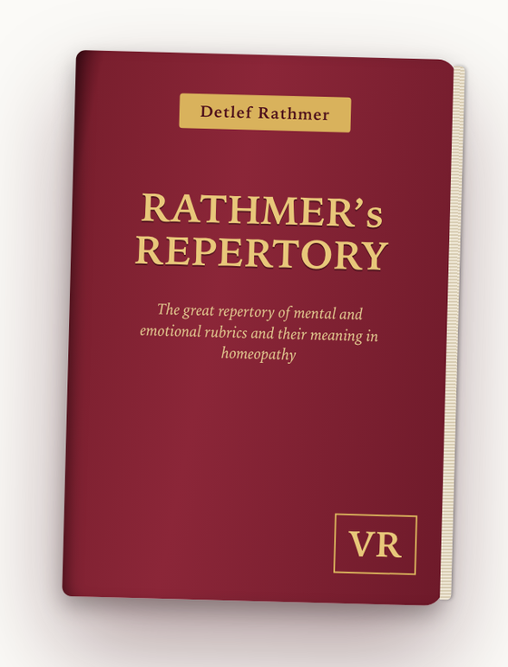

Repertorize in seconds: select rubrics, the remedies appear by frequency, save the case and print it. The basis is 27,981 rubrics of the mental and emotional symptoms, 5,930 of them with meaning, definition or comment. Plus cross-references and the materia medica of 500 remedies. In German and English.
Introductory price € 119.50 for the first months, then € 149.50. One-time payment, no subscription. Access without an expiry date, availability guaranteed for at least 5 years.
Two editions, one repertory
Both run in the browser on any device and are built on the same rubrics. The Enneagram edition shows only the rubrics of the nine Enneagram remedies. The large repertory contains everything and can be switched to Enneagram homeopathy.
The full scopeRathmer’s Repertory
For everyone who repertorizes beyond Enneagram homeopathy.
€ 119.50Introductory price, then € 149.50
- 27,981 rubrics with all 500 remedies
- 5,930 rubrics with meaning, definition or comment, more than 1,000 of them with extensive commentary
- Materia medica of 500 remedies
- Switch for Enneagram homeopathy: highlight the nine remedies or set the repertory to them
- Case function, cross-references, search, PDF print
- Soon also as an app for iPhone and iPad
- Try it free
Order now
Rathmer’s Enneagram Homeopathy Repertory
For everyone who works exclusively with the concept of Enneagram homeopathy.
€ 79.50Introductory price, then € 99.50
- 10,016 rubrics with the nine Enneagram remedies
- Remedy pictures for Platina, Hyoscyamus, Tarentula, Ignatia, Stramonium, Opium, Belladonna, Veratrum and Cannabis indica
- 2,806 rubrics with meaning, definition or comment, more than 700 of them with extensive commentary
- Case function, cross-references, search, PDF print
- To try it: the free trial of the large repertory, same interface
- Only the nine remedies, no other medicines
- Browser only, not as an app
More about the Enneagram edition →Order now
One-time payment, no subscription. Access without an expiry date, availability guaranteed for at least 5 years. Final prices; no VAT is shown under § 19 of the German VAT Act. Reference work designed for homeopaths; it does not replace diagnosis or medical treatment.
Repertorization and case management
Choose rubrics and the remedies appear by frequency. Save cases, add name and notes, print as PDF.
The largest repertory of the mind
27,981 rubrics, systematically arranged. Found in seconds by topic world, from A to Z or through search.
Definitions and commentary
5,930 rubrics come with meaning, definition or comment right there, more than 1,000 of them with extensive commentary. Four out of five main rubrics are explained, especially the practice-relevant ones. It becomes clear what a rubric really means before it is chosen.
Cross-references at a tap
“See under” and “Similar rubrics” from the book are clickable. Never overlook a fitting rubric again.
Materia medica of 500 remedies
Compiled from the rubrics: characteristic rubrics (with only a few remedies) and all topic areas for each remedy.
For Enneagram homeopathy
With one switch the nine Enneagram remedies can be highlighted, or the whole repertory can be set to show only them. Repertorize according to the concept of Enneagram homeopathy.
Runs on every device
In the browser on Windows, Mac, iPhone, iPad and Android, with no installation and no additional software. Light or dark, and placed on the home screen it opens like an app.
Weight rubrics, must-have rubric
Each rubric counts once, twice or three times. Mark a rubric as must-have and only remedies that appear in it stay in the result.
Remedies in the rubrics
For each remedy, tiles show the topic areas where it appears and where its rare rubrics are. One tap narrows the rubric list to them.
Short profile with one tap
Tap a remedy in the result to see its short profile without leaving the case.
Saved rubrics and sets
Collect frequently used rubrics in a list or save them as your own set, and add them to a case with one tap.
Prescription journal and photos
Note prescriptions with dates and attach photos to each case. Everything stays on your device.
Back up your cases
Save all cases to a file and import them on another device.
Help and update notice
A short guide is built in. When a new version is available, the app tells you.
Try it free
The trial version unlocks five large rubrics (Anxiety, Sadness, Anger, Irritability and Weeping) and ten polychrests in the materia medica, with all functions. No sign-up, no cost.
Tip: in Safari tap “Share” → “Add to Home Screen”, then it opens like an app.
The repertory is a reference work designed for homeopaths. It does not replace diagnosis or medical treatment.